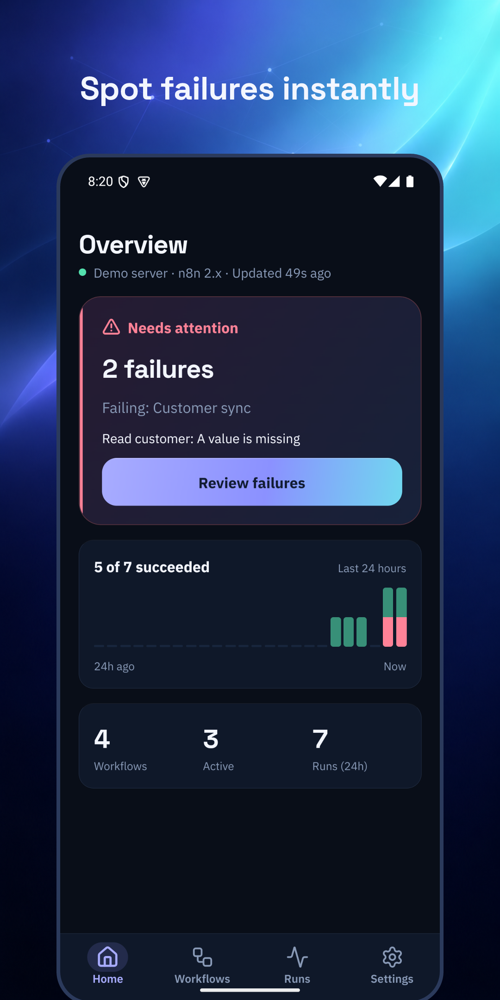
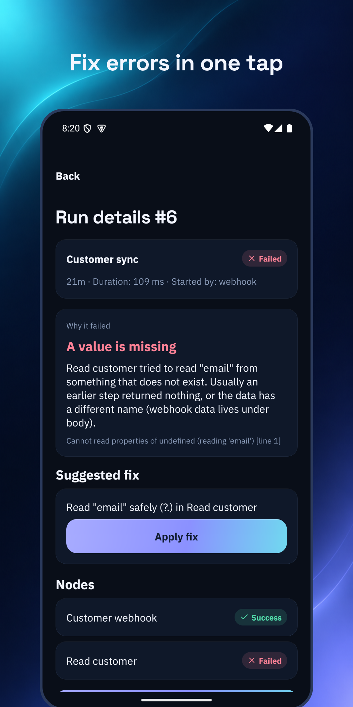

Your n8n workflows. Within reach.
The n8n mobile app that shows what failed, why, and fixes it in one tap. Monitor runs, edit workflows without the canvas and move them between servers.
Get it on Google Play


See failures first
Open the app and see which workflow failed, which step broke and why, with a Review failures button and a 24-hour activity chart.
Fix in one tap
Plain-language causes, step input and output, and safe one-tap fixes for common errors such as missing fields. Retry runs from your phone.
Edit without the canvas
Add, move, rename and delete steps in a thumb-friendly outline. Edit settings with forms, IF and Switch conditions, undo and redo, automatic backups.
Move between servers
Copy workflows between n8n Cloud, self-hosted and local servers (1.x and 2.x). Secrets are detected before sharing.
Private by design
Your API key stays in your phone secure storage. Flowpocket talks only to the n8n server you add. No account, no ads, no tracking.
English and Arabic
Full right-to-left support, dark and light themes, large touch targets.
Open failures in Flowpocket from n8n
Import this n8n error workflow, set your server address, and send the generated message to Telegram, Slack or email. Tapping the link opens the failed run in Flowpocket.
Download the n8n template (JSON)
Questions
Is Flowpocket an official n8n app?
No. Flowpocket is an independent app and is not affiliated with or endorsed by n8n GmbH. n8n is a trademark of its owner.
Which n8n versions and hosting does it support?
n8n 1.x and 2.x on n8n Cloud, self-hosted servers and local machines. You connect with an n8n API key.
Where is my API key stored?
Only on your phone, in the device secure storage. It is sent only to your own n8n server.
Is it free?
Monitoring, fixing and editing for one server are free. Flowpocket Pro (more servers, copy between servers) is an optional purchase made only through Google Play.
Can n8n open a failed run in the app?
Yes. Use the free error template below: it builds a flowpocket:// link that opens the failed run on the right server.